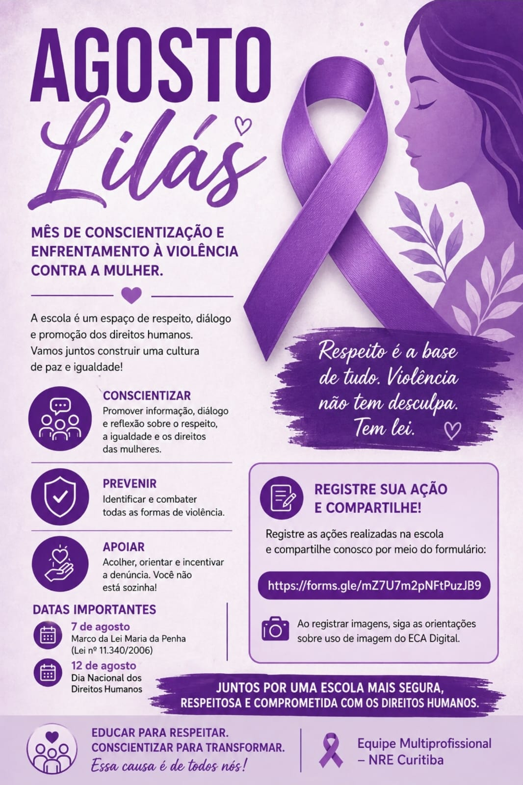

Agosto lilás
por: Ane Andersen
O Agosto Lilás é uma campanha de conscientização e combate à violência contra a mulher. Durante todo o mês, são realizadas ações para informar a sociedade sobre os diferentes tipos de violência, como física, psicológica, sexual, moral e patrimonial.
A campanha também busca incentivar as vítimas a denunciarem seus agressores e procurarem ajuda. É importante lembrar que nenhuma mulher deve aceitar situações de violência ou viver com medo. Todos podem contribuir para essa luta, oferecendo apoio, respeito e acolhimento. Combater a violência contra a mulher é responsabilidade de toda a sociedade. Juntos, podemos construir um ambiente mais seguro, justo e livre de violência para todas. O Agosto Lilás nos convida a refletir sobre a importância de combater a violência contra a mulher e de construir uma sociedade baseada no respeito, na igualdade e na proteção. Mais do que uma campanha, este mês representa um chamado à conscientização, à denúncia e ao apoio às vítimas. Cada atitude de respeito e cada voz que se posiciona contra a violência contribuem para um futuro em que nenhuma mulher precise viver com medo.